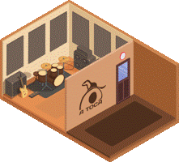
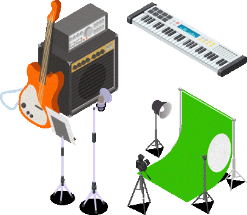

Serviços

Salas de Ensaio
3 cabines (16, 26 e 27m2). Insonorizadas para eliminar interferências com o exterior, acusticamente tratadas para melhor qualidade de som. Com backline (bateria, amplificadores e PA).
Preços à hora por sala entre 14 e 25€
Estúdio de Webcast
Streaming, podcasts, gravação de conteúdos e transmissões online. Sala insonorizada e acusticamente tratada.

Serviços Extra
Instrumentos e equipamento audio adicional, consumíveis e especialistas (músico, técnico, tutor, consultor/mentor...).

🎪 Incubadora Artística
Salão multifuncional com 90m² para formação, workshops, tertúlias, apresentações e eventos culturais.